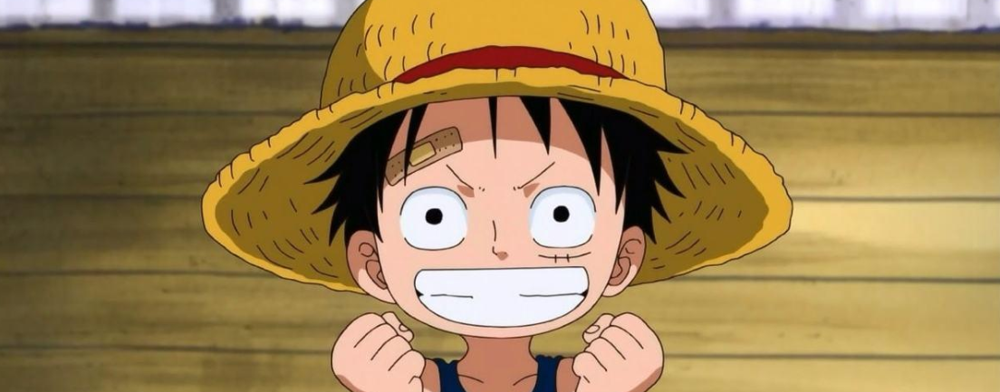

蒙奇·D·路飞，日本漫画《航海王》及其衍生作品中的男主角。外号“草帽”路飞，是草帽一伙、草帽大船团船长，极恶的世代之一。橡胶果实能力者，悬赏金15亿贝里。梦想是 找到传说中的One Piece，成为海贼王。
路飞性格积极乐观，爱憎分明，宁死不屈，十分重视伙伴与朋友，对任何危险的事物都超感兴趣。和其他传统的海贼所不同的是，他并不会为了追求财富而杀戮，而是享受着身 为海贼的冒险和自由。
尾田荣一郎根据日本漫画《龙珠》而构思出来路飞这一角色。尾田在连载《航海王》之前，还推出过短篇海贼漫画《冒险的黎明》，该漫画的主角也叫路飞，是《航海王》中路 飞的雏形 。
作者尾田荣一郎在《航海王》连载10周年的纪念情报志《ONE PARA》中表示，路飞（Luffy）这名字源自英语“Luff”，意即“逆风航行”，这是他想过最适合船长使用的名 字。此外，他也指出路飞生下来就是运势非凡的人；只有实力和运气兼备的人，才能成就伟大功业。
19岁的青年海贼，海军英雄蒙奇·D·卡普的孙子，革命军首领蒙奇·D·龙的儿子，波特卡斯·D·艾斯、萨博的义弟，集结香波地群岛的十一超新星之一。悬赏金15亿贝里，被称作 “草帽小子”。小时候误食了橡胶果实，所以自己获得如橡胶般自由伸缩的能力。梦想是找到传说中的One Piece，成为海贼王，他是在香克斯的启蒙下萌生这个梦想的。口头禅是 “我是要成为海贼王的男人”。尾田提到草帽一伙如果是个大家族，那路飞就是家中的四男 。
一头黑色的短发，看上去有些乱，左眼下有曾经自己为了表现勇敢而自己划下的伤疤 。平时身穿红色的小坎肩，蓝色的半腿牛仔裤。脚穿草鞋。头上一直戴着曾经红发寄托给路 飞的草帽。两年后，胸口多出了因赤犬的攻击而产生的“X”型伤疤，而在穿着上，他在腰上加了一条黄色腰带。脸上永远挂着自信的笑容。

路飞积极乐观，他出海不是为了钱财，而是为了享受冒险的过程，在罗格镇的断头台上即将被斩首时，在却异于常人的露出开朗的笑容，因为他早已抱有必死的觉悟。
他单纯天真，是个一根筋，对新鲜事物尤其机械和新奇武器方面有强烈的好奇心，对好奇的事物眼中会产生星星。他也特别喜欢动物，具有对各种动物的匪夷所思的交流术，对各 种独角仙情有独钟 。此外，路飞对女色毫无兴趣，面对入浴绝世美女波雅·汉库克毫无动心 。
路飞爱憎分明，从不会隐藏自己的想法，一旦遇到性情较敏感的对象就会感到头疼，会直言讨厌，也非常排斥气量狭小的对象。路飞也很直率，敢于在轻视自己国民的生命、迷倒 众生的汉库克面前直呼讨厌，也敢于在爱哭鬼白星面前直呼讨厌 。